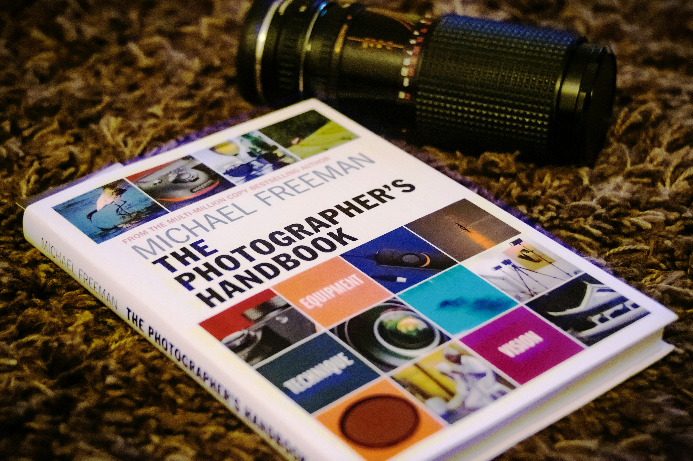

“ Every Moment
Carries an Endless Story. ”


無論是時尚攝影、婚禮攝影、肖像攝影還是藝術創作，這裡是您展示才華的完美平台。

拍攝是一門藝術，我們的課程專區有許多為攝影師與模特兒打造的學習資源。
從基礎攝影設定到進階燈光運用，從構圖技巧到創意拍攝秘訣， 無論是新手還是專業人士，都能在這裡找到提升技術的靈感，讓每一張照片都成為藝術品！
從基礎攝影設定到進階燈光運用，從構圖技巧到創意拍攝秘訣， 無論是新手還是專業人士，都能在這裡找到提升技術的靈感，讓每一張照片都成為藝術品！